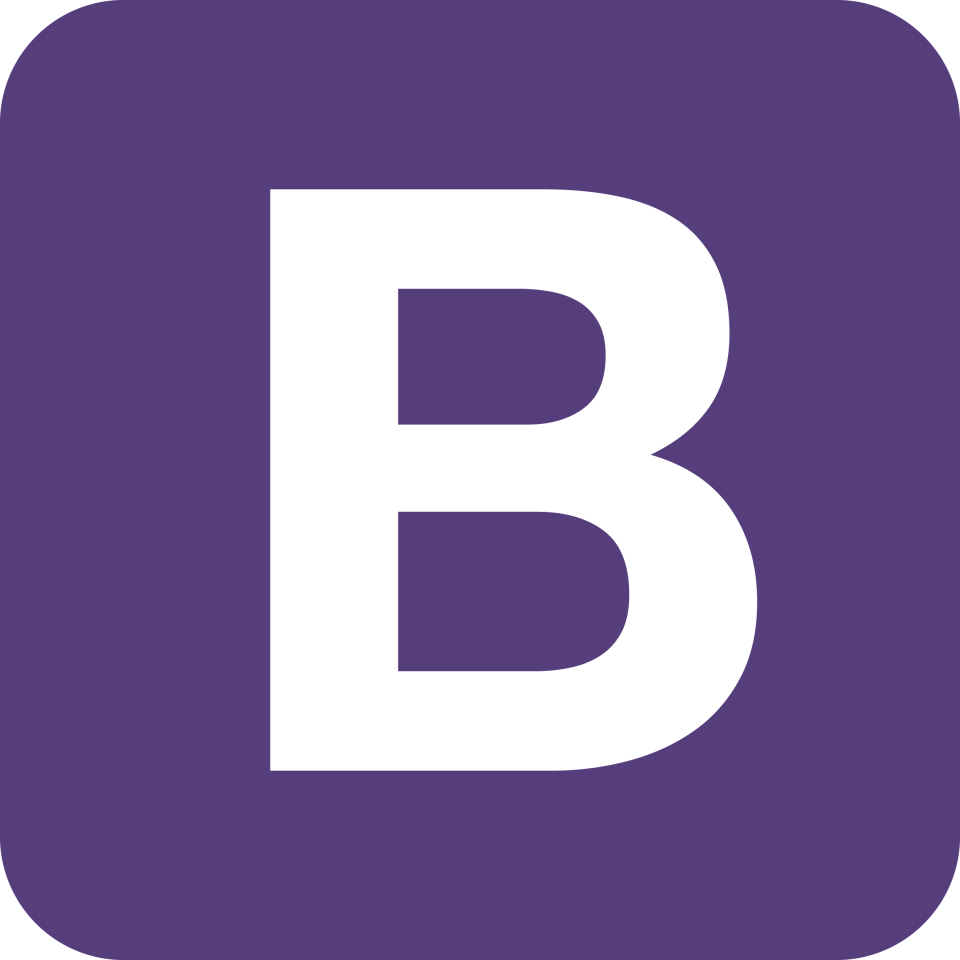
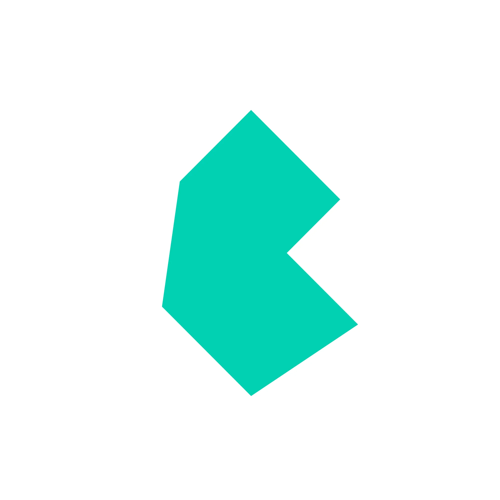
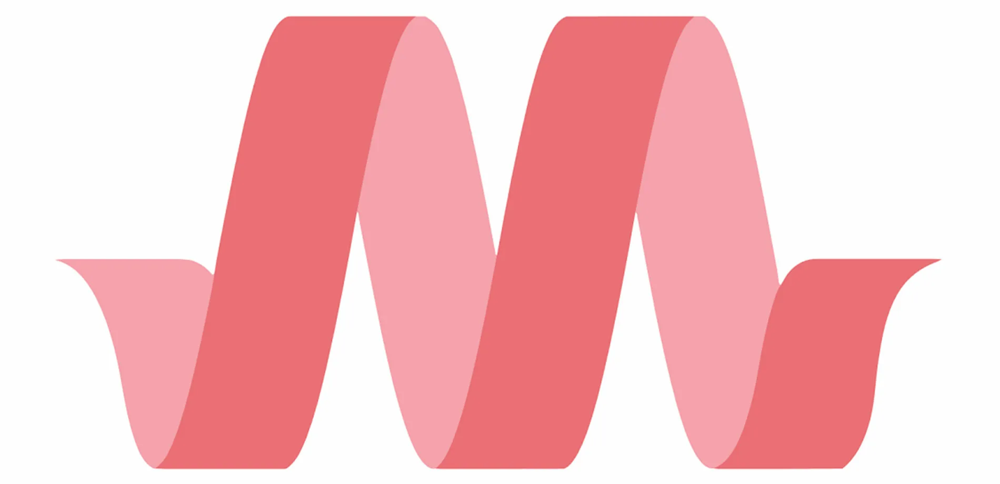

1. Bootstrap

Bootstrap, возможно, самый популярный и хорошо известный CSS-фреймворк в мире, и так уж случилось, что он мой личный фаворит.
Как одна из лучших библиотек CSS, Bootstrap предлагает согласованную и протестированную кодовую базу, на которую вы можете положиться для получения стабильных результатов. Недостатком является то, что она оставляет мало места для гибкости. Классы Bootstrap помогают front-end разработчикам быстро добавлять стиль в свой HTML-код.
Bootstrap также хорошо документирован, что упрощает поиск ресурсов. Это один из самых популярных CSS-фреймворков, имеющий большое и активное онлайн-сообщество пользователей.
| Плюсы | Минусы |
|---|---|
| Большое сообщество и поддержка | Отсутствие гибкости дизайна |
| Созданы с учетом доступности | Большие размеры файлов и увеличенное время загрузки |
| Поддерживает как SASS, так и МЕНЕЕ | Чрезмерная зависимость от классов |
| Проблемы с совместимостью со старыми версиями браузера |
2. Bulma

Bulma - это бесплатный CSS-фреймворк с открытым исходным кодом, основанный на Flexbox. Он был создан, чтобы предоставить современную минималистичную альтернативу другим CSS-фреймворкам.
Вместо использования классов для стилизации и верстки Bulma использует модульный подход. И это позволяет разработчикам создавать пользовательские дизайны без написания большого количества CSS-кода. Bulma также придерживается строгого подхода, основанного только на CSS, и не включает компонентов JavaScript.
Модульная конструкция Bulma делает ее более гибкой. Вы можете легко настроить ее в соответствии с вашими конкретными потребностями проекта. Она также разработана для кроссбраузерной совместимости. А еще он легкий, быстрый и оптимизирован по производительности.
| Плюсы | Минусы |
|---|---|
| Высокая гибкость и настраиваемость | Небольшое сообщество разработчиков |
| Легкий и быстрый | |
| Бесклассовый и модульный дизайн | |
| Крутой курс обучения для новичков во Flexbox |
3.Fomantic UI
Fomantic UI описывается как официальный форк сообщества Semantic-UI. Это связано с тем фактом, что он начинался как проект с открытым исходным кодом для предоставления доступа к Semantic UI, который является интерфейсным фреймворком, который больше не поддерживается.
Пользовательский интерфейс Fomantic прост в использовании и настройке и ориентирован на семантический HTML. Классы интуитивно понятны и используют синтаксис естественного языка, понятного человеку.
Он также разработан для того, чтобы быть быстрым и эффективным, а также обеспечивать поддержку специальных возможностей ARIA (доступные расширенные интернет-приложения).
| Плюсы | Минусы |
|---|---|
| С открытым исходным кодом и под руководством сообщества | Ограниченное количество документации |
| Простой в использовании и настраиваемый | Ограниченная поддержка JavaScript |
| Сосредоточенность на доступности | Меньшее сообщество |
| Крутой курс обучения для новичков во Flexbox |
4.Blaze UI
Blaze UI - это набор инструментов пользовательского интерфейса с открытым исходным кодом для быстрого создания интерфейсных приложений. Он ориентирован на масштабируемость и ремонтопригодность. Несмотря на то, что в Blaze UI небольшое сообщество разработчиков, инструментарий хорошо документирован, и с ним легко начать.
Предоставляемые компоненты пользовательского интерфейса зависят исключительно от встроенных функций браузера, а не от отдельной библиотеки или фреймворка.
| Плюсы | Минусы |
|---|---|
| С открытым исходным кодом и под руководством сообщества | Меньшее сообщество |
| Это легкий и быстрый | Ограниченная поддержка JavaScript |
| Сосредоточение на доступности |
5.Materialize

Materialize - это CSS-фреймворк, обеспечивающий современный и адаптивный дизайн для front-end веб-разработки и основанный на рекомендациях Google по Material Design.
Materialize включает в себя различные компоненты пользовательского интерфейса, такие как панели навигации, формы, карточки, кнопки и модели. Они предварительно оформлены и готовы к использованию с минимальными усилиями. Фреймворк также предоставляет компоненты JavaScript для добавления интерактивности на ваш веб-сайт.
| Плюсы | Минусы |
|---|---|
| На основе рекомендаций Google по дизайну материалов | Большой размер файла |
| Готовые компоненты пользовательского интерфейса | Чрезмерная зависимость от JavaScript |